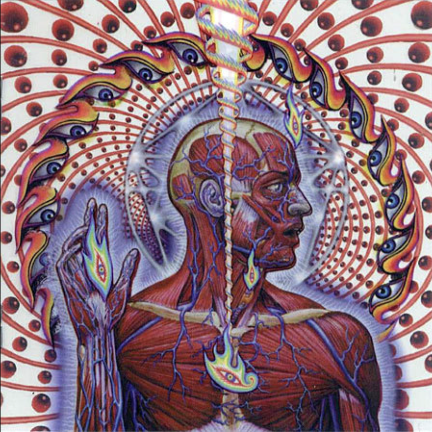
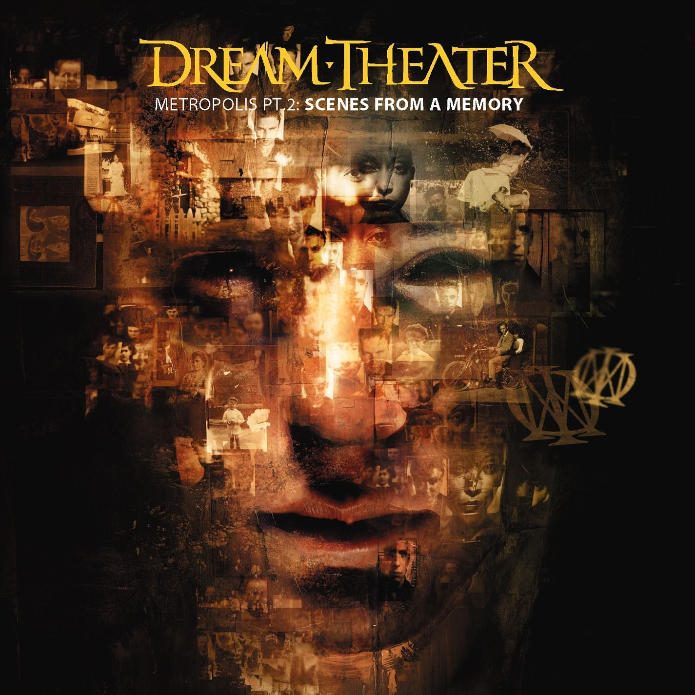

Top Five Albums
My Top Five Albums of All Time
-
Floating Points: Crush (2019)

Favourite Track: LesAlpx
-
Tool: Lateralus (2001)

Favourite Track: Parabola
-
AC/DC: Back In Black (1980)

Favourite Track: You Shook Me All Night Long
-
Dream Theater: Metropolis Part II: Scenes From a Memory (1999)

Favourite Track: Strange Déjà Vu
-
Porcupine Tree: Deadwing (2005)

Favourite Track: Arriving Somewhere But Not Here